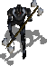
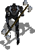
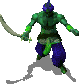
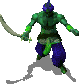
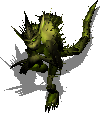
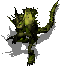
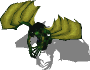
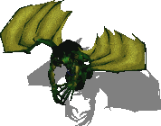
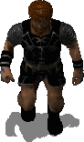
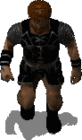

Introduction
This mod patches Baldur's Gate II: Throne of Bhaal to support
additional creature and character animations (referred to as
"animation slots"). It also offers a dynamic automated process for
claiming new animation slots. Thus, it acts as a central hub,
usable by anyone who would like to add animation entries to the game
without being bogged down by issues of mod conflicts and
incompatibilities.
Infinity Animations supports a wide variety of animation types from
Baldur's Gate I, Baldur's Gate II, Icewind Dale I, Icewind Dale II,
Planescape: Torment and Neverwinter Nights. As an added bonus, the
mod restores Baldur's Gate I character animations in their entirety,
and paperdolls have been unlocked for some animations that did not
support them previously.
An important feature for players who use several large mods (known
as "megamods") is a resolution of animation conflicts, and a
restoration of standard animations that megamods have overwritten.
Finally, this mod contains optional components that implement many
new animations into the game. Ongoing work will address sound sets
for new animations. While the number of supported animations may not
be "infinite" as the name suggests, it should be large enough to
accommodate everyone's present (and in all likelihood future) needs.
Key features
-
Restores Baldur's Gate I character animations
-
Improves paperdoll support for existing animations
-
Adds custom game animations for characters and creatures
(including dragons)
-
Allows use of many different animation types (some never
before seen in the games)
-
Resolves the problems of animation stacking, slot and naming
conflicts
-
Offers GUI
support for adding new animations
-
Lets you watch as the percentage of free animation entries refuses
to go down :)
For details on how to add new animations, consult the Adding Slots section of the original
documentation.
•Back to top
Compatibility
Infinity Animations works with BG2: Throne of Bhaal and conversions
based on ToB. Make
sure you have Throne of Bhaal patched to version 26498.
Check the ReadMe files related to your patch in your game folder and
the BioWare
website if necessary.
This mod should also work with all other mods, including Baldur's Gate Tutu (and
EasyTutu), Baldur's Gate
Trilogy and the BiG World
Project.
Install this mod after most other mods, particularly those that add
creatures or animations, but before any final "biffing" routines.
Start a new game after installing this mod, or use
the Saved Game Animation Fixer component if you're reluctant to do
that.
If you want to install Generalized Biffing
As of WeiDU v247, some functions operating on the Latin-1 (8859-1) character set have been depracated and now use only US-ASCII characters.
Biffing the animation files with non-ASCII characters in their filenames will cause the game crash. Follow these steps before installing Generalized Biffing:
- Remove all setup-modname.exe files from your BG2 game directory
- Extract Generalized Biffing into the game directory, but don't install it
- Download WeiDU v246
- Rename weidu.exe from the v246 package to setup-generalized_biffing.exe and put it in the game directory overwriting the existing one
- Install Generalized Biffing with WeiDU v246
•Back to top
Installation
Note: If you've previously installed the mod,
remove it before extracting the new version. To do this, run
setup-infinityanimations.exe,
uninstall all previously installed components and delete the
infinityanimations folder. When installing or uninstalling,
do not close the DOS
window by clicking on the X button!
Instead, press the Enter key whenever instructed
to do so.
Installing with non-ANSI compatible language systems
Baldur's Gate II uses the non-Unicode Windows-1252 code page
to load resource files. Some of the resources in Infinity Animations use
characters like £/µ/Þ/... which map to different numerical values.
If your system is using a different code page, you must change it manually
yourself before unpacking the mod archive and installing. This can be done as follows on Windows systems:
-> Control Panel
-> Region
-> Administrative tab
-> Language for non-Unicode programs
-> Change system locale: English (United States)
Disable any antivirus or other memory-resident
software before installing this or any other mod. Some
(particularly avast!) have a tendency to report false positives with
mod activity, resulting in failed installs.
You can extract files from the archive using WinRAR, ZipGenius or another
file compression utility that handles .rar files.
Windows
Extract the contents of the mod to the folder of the game you wish
to modify (BG2,
BGT or EasyTutu).
On successful extraction, there should be an infinityanimations
folder and a setup-infinityanimations.exe file in your game folder.
To install, simply double-click setup-infinityanimations.exe
and follow the instructions on screen.
Run setup-infinityanimations.exe in your game
folder to reinstall, uninstall or otherwise change components.
Linux
Extract the contents of the mod to the folder of the game you wish
to modify. Download the latest Linux version of WeiDU and copy WeiDU and
WeInstall to /usr/bin. Then open a terminal and cd to your game
installation directory.
Optional: run 'tolower' and answer 'Y' to both queries. You can
avoid running the second option (linux.ini) if you've already ran
it once in the same directory. To save time, the archive is already
tolowered, so there's no need to run the first option (lowercasing
file names) either, if you've extracted only this mod since the
last time you lowercased file names. If unsure, running tolower and
choosing both options is the safe bet.
Run WeInstall setup-infinityanimations in your game
folder to install the mod. Then run wine BGMain.exe
and start playing.
•Back to top
Components
The installer includes the following components. The number of each
is the component DESIGNATED number which gives it a fixed install
position, lets other components detect it and allows automated
installers like the BiG World Setup specify component choices.
All subcomponents require the main component (they need to since
it's the one that installs new content). All components are
otherwise optional. Also note that no component affects joinable
NPCs, something
best left to individual modder discretion. (Hence, if something says
it affects all female tieflings, it doesn't include Amber and Fade
in that.)
0. Infinity Animations
Requires ToB v26498
- Checks mod files and .exe validity
- Backs up and patches the .exe
- Replaces _LOW creature animations
- Updates .ids files
- Restores any necessary mod-overwritten animations
- Copies new animations (any extracted to /content folder)
- Fixes any affected creatures
25. Humanoid Animation Fixes
- Male human fighters get the fighter instead of cleric animation
- Male elf fighters get the fighter instead of cleric animation
- Male halfling fighters get the fighter instead of cleric animation
- Female human fighters get the fighter instead of cleric animation
- Male human mages get the mage instead of cleric animation
- Male elf mages get the mage instead of cleric animation
- Male human thieves get the thief instead of fighter animation
- Female human thieves get the thief instead of fighter animation
- Male human monks get the monk instead of cleric animation
- Male human pirates get the pirate animation
- Male human sailors get the sailor animation
- Amnish guards get the Amnish guard animation
- Male human Shadow Thieves get the Shadow Thief animation
50. Distinctive Genies
- Uses djinn, efreet, dao, jann and marid animations where sensible
100. Distinctive Fiends
- Nabassus get a green-grey tanar'ri animation
- Chromatic Demon gets a somewhat more colourful base animation
- Bebiliths (Longer Road and Drizzt Saga only) get the
NWN animation
- Some mariliths get a darker animation
- Night hags get the PS:T night hag animation
- Bone fiends get the NWN osyluth animation
- Gelugons (only if added by a mod) get an ice salamander animation
- Yochlols (except those in drow form) get a dark otyugh-based animation
- White, green and red abishai get the relevant IWD or PS:T animations
- Manes get the IWD
drowned dead animation
- Erinyes get a black-winged elf avatar
- Succubi get the NWN
succubus animation
- Maurezhi get a dark ghoulish animation
- Glabrezu get the proper glabrezu animation
Pit Fiends
150. All get the NWN animation
175. Some get the NWN animation
- Choice of subcomponent (or none); "some" = roughly half, randomly selected
Cambion/Isair Animation
210. All cambions
230. Some cambions
- Same logic as Pit Fiend component
Alu-Fiend/Madae Animation
260. All alu-fiends
280. Some alu-fiends
- Same logic as Pit Fiend component
400. Distinctive Undead
- Banshees get the wailing virgin animation
- Floating skulls get the demilich animation
- Greater ghasts get the IWD ghast animation
- Generic ghosts get the IWD ghost animation
- Greater ghouls get the IWD ghoul animation
- Some ghouls get the PS:T ghoul queen animation
- Greater liches get the IWD lich animation
- Apparitions get the mist creature animation
- Revenants get the revenant animation
- Shadow Beasts get the shadow animation
- Wraiths get the IWD large shadow animation
- Spectres get the IWD large shadow alternate
- Shadows get the IWD small shadow animation
- Some shadows get the IWD small shadow alternate
- Greater skeletons get the skeleton0 animation
- Moon horrors get the skeletonb animation
- Wights get the IWD grey wight animation
- Green zombies get the IWD green wight animation
- Zombie lords get the IWD yellow wight animation
- Undead knights and similar get the IWD barrow wight animation
- Greater zombies get the IWD yellow zombie animation
- Lacedons and sea zombies get the IWD blue zombie animation
Skeleton Warriors
410. Barrow Wight animation
415. Skeleton animation
420. SkeletonA animation
- Assigns the chosen animation to all skeleton warriors
Seer Animation
450. Some beggars and slaves
455. Some beggars
460. Some slaves
- Same logic as Pit Fiend component
Svirneblin Animations
480. Animations only
490. Animations and sounds
Skipped if Aurora's Shoes installed (does the same thing)
- Uses all svirfneblin variants for Underdark deep gnomes
500. More Base Animations
- Histachii get the IWD
histachii animation
- Lizardman warriors get the brown lizardman animation
- Lizardman shamans get the green lizardman animation
- Lizardman chiefs get the lizard king animation
- Variant trolls (normal, blue, ice, snow, small) where relevant
- Greater umber hulks get the IWD umber hulk animation
550. More Icewind Dale Animations
- Animated Plates get animated plate animations
- Archdruids get the IWD
Arundel animation
- Variant barbarians (brown, red, tan and shamans)
- Greater elementals make use of variant BG2/IWD animations
- Some fire giants get the IWD fire giant animation
- Iron golems get the IWD
iron golem animation
- Adamantite golems get the BG2 iron golem animation
- Sahuagin priestesses get the IWD sahuagin animation
- Sahuagin royal guards get the BG2 large sahuagin animation
- Sahuagin chiefs get the IWD large sahuagin animation
600. More Icewind Dale II Animations
- Greater fire giants and firbolgs get the fire giant variant
- Variant goblins (worgriders, leaders, browns, greens, elites)
- Hook horrors get the hook horror animation
- Shadow druids get the Malarite animation
- Ellesime clones get the white-haired Ellesime animation
- Poison mists get the lagoon creature animation
- Death tyrants get the death tyrant animation
- Wererat gets the wererat animation
- Worgs get the IWD2
worg animation
650. More Neverwinter Nights Animations
- Scythe-wielders (in NTotSC) get the
NWN Amel animation
- Bombardier beetle (in Big Picture) gets the NWN animation
- Greater basilisks get the NWN basilisk animation
- Modrons get the modron animation
- Displacer beasts (in AjocMod) get the NWN-CCP animation
- Some fire giants get the NWN female fire giant animation
- Some frost giants get the NWN female frost giant animation
More Planescape: Torment Animations
710. 25% of relevant non-joinables
720. 50% of relevant non-joinables
730. 75% of relevant non-joinables
740. Most relevant non-joinables
- Female human thieves get the female Curst townie animation
- Male human thieves get the male Curst townie animation
- Female monks get the female Dustman animation
- Male monks and Dustmen get the male Dustman animation
- Some ghouls get the female ghoul animation
- Some ghouls get the male ghoul animation
- Male human smiths get the Godsman animation
- Axe- and hammer-wielding bandits and mercenaries get the large
thug animation
- Sword- and dagger-wielding bandits and mercenaries get the
small thug animation
- Female human peasants get the female lower-class townie
animation
- Male human peasants get the male lower-class townie
animation
- Male human merchants get the merchant animation
- Female human merchants get the midwife animation
- Harlots get the harlot animation
- Skeleton mage gets the skeleton priest animation
- Skeletons get the skeleton worker animation
- Female tieflings get the female tiefling animation
- Male tieflings get the male tiefling animation
- Male human mages get the townie wizard animation
- Female human nobles get the female upper-class townie animation
- Male human nobles get the male upper-class townie animation
- Some zombies get the female zombie animation
- Some zombies get the male zombie animation
Moinesse's Avatars for IA
7000. 25% of relevant non-joinables
7010. 50% of relevant non-joinables
7020. 75% of relevant non-joinables
7030. Most relevant non-joinables
- Male human barbarians get the male barbarian animation
- Female human druids get the female druid animation
- Female human fighters get the female human fighter animation
- Female elf mages get the female elf mage animation
- Female human mages get the female human mage animation
- Female human thieves get the female human thief animation
(unless they've already received the female Curst townie animation)
- Male human ninjas and assassins get the male human ninja animation
- Male vampires get the Moinesse vampire animation
BG1 Character
Animations for NPCs
8000. 25% of relevant creatures
8010. 50% of relevant creatures
8020. 75% of relevant creatures
8030. Most relevant creatures
- Uses the original Baldur's Gate character animations as
specified
- The last option is "most" instead of "all" because certain
creatures are excluded
- These include creatures with scimitars, katanas or anything
other than a shield in the offhand slot (or related proficiencies)
since BG1 did not have
these animations
- Use with caution in the case of joinable
NPCs: it will
avoid any characters with the two weapon proficiency or a second
weapon equipped, but do not try to dual wield
9000. Fix Area Creature References
- Corrects changed creature animations in area files for
easier reference
BG1 Character
Animations for PCs
9500. Prompt for each exported PC
9510. Prompt for problematic PCs
9520. Patch all PCs
without prompting
- Uses the original Baldur's Gate character animations as
specified
- The second option patches all PCs but prompts for those with
scimitars, katanas or anything other than a shield in the offhand
slot
- Scimitars and katanas should work, but will appear as
longswords on character avatars
- Use with caution: do not try to dual wield
or the game will likely crash
BG1 Character
Animations for Saved Games
9600. Prompt for each character
9610. Prompt for problematic characters
9620. Patch all characters without prompting
- Same notes as above
- You get to choose whether to patch each game (and character
within it, if you've selected one of the prompting options)
- Back up your saved games before uninstalling
this component, as it will restore the versions present at the
time of the installation
Saved Game Animation Fixer
9900. Correct only LOW animations
9910. Correct all animations IA has changed
- The first option prevents games from crashing due to moved
LOW animations
- The second option does the above and also patches any changed
animations into your saved games
- You get to choose whether to patch each game
- If you've started a new game after installing this mod, then
this component is not necessary (unless you're starting in the
BG2 portion of
BGT)
- Back up your saved games before uninstalling
this component, as it will restore the versions present at the
time of the installation
•Back to top
Troubleshooting
These are some general tips if you have problems getting the game
working, with or without this or other mods. Many times, errors have
to do with the game engine itself or the manner of installation or
gameplay. The game recommends deleting all files out of the /cache,
/temp and /tempsave subfolders in your game folder to see if that
resolves the problem before any further troubleshooting.
Symptom: Game freezes or crashes to desktop (CTDs)
Sometimes the game displays an "assertion error" in a pop-up window
when this happens, but often times it doesn't. To enable the full
error message, open the file baldur.ini in your
game folder with a text editor (such as Notepad). If you find you
can't edit it or save changes, see
this topic for assistance.
Under the [Program Options] section in the file, type
Logging On=1 (unless it's already there). While you're
there, you may also want to make sure Debug Mode=1
is there to enable the CLUA Console for
debugging and testing. Save the file and exit. Now go back into the
game and try to reproduce the crash. Then look in your game folder
again for the Baldur.err file and open it with a
text editor to analyse its contents.
Symptom: Game crashes with no Baldur.err log and shows
either a black screen or a pop-up window indicating an error at
offset 005ca8a8
This usually indicates an animation-related issue. Make sure you
have the latest version of the mod. If you've installed other mods
after it and have this issue, install the fix available here.
ERROR: error copying [infinityanimations/content/somefile.bam]
ERROR: [SOMEFILE.CRE] -> [override/SOMEFILE.CRE] Patching failed
(COPY)
Stopping installation because of error. (with no other
error message)
Less-than-informative messages like these may indicate you're
installing to a hard drive with a low data transfer rate or an
antivirus program is active during installation (which can also
affect data transfer). Try installing to an internal drive with
antivirus protection disabled during the install. If unsure,
disconnect from the Internet (either unplug your network cable or
disable your wireless adaptor) and turn off all
memory-resident programs during the install. To get a list of these,
go to Start > Run and type msconfig where it says
"Open:" then click OK. When the System Configuration Utility appears,
click on the Startup tab. The only really necessary programs that
need to be loaded in memory at startup are those related to your
graphics chip (typically ATI or NVIDIA). Uncheck everything else,
reboot and try installing the mod again. There are well-documented
issues with installing mods while Avast antivirus is running, so
make absolutely sure all components of Avast are completely disabled.
Other issues
If you have more than one large mod installed, please refer to the
Megamod FAQ for more troubleshooting tips. If none of this
resolves your issue, or you have mod-specific issues, please report
the problem in the mod's forum.
Include the contents of your WeiDU.log file in the post, or
attach it if it's large.
•Back to top
Credits
Author: Erephine
WeiDU
coding: Miloch
Assistance: Arkenor and SergIS
Hosting: Spellhold Studios (Forums)
Programs/tools used in creation:
This work (including all code and documentation) is licensed under
a Creative
Commons Attribution-Noncommercial 3.0 Unported License. You are
free to share (copy, distribute and transmit) and to remix (adapt)
this work, except for commercial purposes. See the Creative
Commons Public License for more details. Please post any changes
or updates at the mod's forum.
All copyrights and trademarks are the property of their respective
owners.
•Back to top
Version History
WeiDU Beta 5.1.2: 11 February 2024
- Fixed script issues caused by the "Fix Area Creature References" component
- Disabled the forced installation of the "Fix Area Creature References" component
WeiDU Beta 5.1.1: 25 August 2023
- Fixed the filename character encoding of Moinesse's Avatars
WeiDU Beta 5.1: 21 March 2023
- Prepacked all the required animation files in the main installation package
- Removed the code page registry hacks and checks for files using CP-1252
- Integrated the fixes from BiG World Fixpack v20.0.1
WeiDU Beta 5: 12 May 2010
- Changed the .exe patch so that it forces a code page change and
reboots if a non-Western code page is detected
- Updated the .exe patch so that it recognises BG1 thief avatars
- Cloned missing animation tables from the unmodded game
- Added other missing animation tables to base content folder
- Adding missing minotaur and water weird sounds
- Disabled problematic stacked animations from chitin.key
- Added creature sounds where relevant (major update here)
- Fixed a minor READ_BYTE glitch in creature patching
- Made it certain so that subcomponents can't be installed if the
main component is not installed (to prevent crashes)
- Added night hags to the "Distinctive Fiends" component
- Added ghoul queens to the "Distinctive Undead" component
- Added white-haired Ellesime to the "More IWD2 Animations" component
- Added lagoon creature to the "More IWD2 Animations" component
- Deprecated tieflings from the cambion/alu-fiend components in
favor of the PS:T
animation component
- Corrected skeleton warriors appearing as verbeegs glitch
- Added Amel animation to NWN component (if NTotSC is installed)
- Added Humanoid Animation Fixes component
- Added Moinesse's Avatars component
- Added More PS:T
Animations component
- Added BG1 Character
Animations for Saved Games component
- Added saved game animation fixing component
- Traified the entire freaking mod by hand for translators (thanks
for nothing, WeiDU! :P)
WeiDU Beta 4: 7 Feb 2010
- Added BG1 Character
Animations for NPCs
component
- Added BG1 Character
Animations for PCs
component
- Changed fiend patching to accommodate scripting
WeiDU Beta 3: 1 Feb 2010
- Fixed _LOW animation corrections causing areas crashing on load
- Fixed scripts and dialogues that Polymorph to _LOW animations
- Fixed code glitch preventing installation of optional components
- Added option to install sounds in svirfneblin component
- Added component to fix area creature references
- Added revised salamander sound tables (MSAL and MSA2 slots)
- Enhanced compatibility with aTweaks
- Enhanced creature animation patches for fiends and orc shamans
WeiDU Beta 2: 23 Jan 2010
- Added installer support for non-ANSI system locales
WeiDU Beta 1: 11 Jan 2010
- First WeiDU
release
- All affected mod and vanilla creatures patched
- Optional components added
(r.10010043)
- Fixed a bug with Icewind Dale animation slots in Baldur's Gate II
(r.09102252 update)
- Updated documentation and Reference Picker
- Added alternate stylesheet ;)
(r.09102252)
•Back to top


 



 



 



 



 
